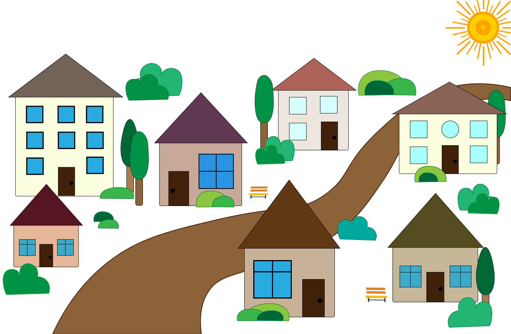

Eng
Eng
With zeal
A little mouse lived in a magical world. She was distinguished by her purposeful character from a very young age. She coped with any difficulties, because she always brought the things she started to the end. For that, she was loved by those around her and praised by her family.
And indeed, one could only envy the zeal of the little one. And the mouse dreamed on a huge scale. In her thoughts, she created beautiful things, helped animals, liked to literally create cities where all the citizens would live beautifully.
But the great desire did not coincide with the small paws of the mouse. She looked at their tiny fingers and realized that she couldn't do it herself. A mighty force is needed. But where to get one? But who will tell?...
She thought of asking the one who was distinguished by the greatest wisdom. An advice of the snail is needed. The one in his sink should have known.
A mouse ran out of her old hole. She looked around with a sad look, but smiled with hopeful eyes. Resolutely headed through the entire green ravine. The sun was already slowly beginning to slide towards the earth. Warm red rays passed between the leaves and blades of grass, enveloping the whole earth with their grace. Peace of mind.
And here is the river. Fast, stormy and noisy, it looked majestic and playful at the same time. The mouse went down to the sandy shore. It's nice to live near big water. The rays reflect hundreds of multi-colored beads, generously scattered on the rushing water. Difficult to take the eyes off.
And here, a little further downstream, there is a small sloping house of a snail.
- Good day, wise snail! - spoke the mouse.
- But it's almost evening. However, I agree, really good, - calmly said the half-asleep snail.
- Uncle, I only hope for you. You are the oldest and should definitely know.
A slow snail hummed. A slight smile crossed the old age wrinkles.
- Tell me where to get such power, such strength and the ability to create beautiful things? So that my dreams do not remain just an empty hope, - the mouse rattled.
- Do you want to get magical skills? - the old man looked at his guest, - To get them, you have to work hard, show courage, wisdom. And the main thing is not to forget about responsibility.
- Not every animal can boast of my zeal. I will not back down from my aim, - she said loudly.
- Fine. Persuaded. I will tell you, so you could do good deeds.
The snail turned around in its shell, stretched out its arms and calmly began to tell a story.
- Our world is full of magic. It is not so difficult to get them if you know how. And there is no need to regret spending charms on good deeds. Well, if you are not afraid, you should drink water from a high well.
- And that's all? Just tell me where to find it?
- Everything and not everything. When you look into the well, there should be a silver moon floating there. With a thin slice, it should reflect off the water, and next to it are three bright stars. A flower that barely emerges from under the water should bloom in the white rays. It is in the core that you need to collect a magic drop with a ladle and drink it. Look for a well on the highest mountain. However, you are lively, there will be no trouble.
- I realized. It remains to get that ladle.
- So. The last time I heard that it was taken by the stork to its nest. You will recognize him immediately.
The mouse quickly shook its head. She thanked the snail and ran with all her might. Everything became clear. A clear plan, step by step, was already clearly in front of her eyes. All that remains is to turn the idea into reality.
It is already evening. The sun was hiding behind the edge of the sky, which told everyone else to sleep. The evening coolness, full of fragrant herbs, began to be felt. Multicolored flowers covered the buds, tired animals hid in their homes, the first stars began to sparkle high in the mountain. But mouse has her own task. There is no time to go to bed when such a big business is waiting for you.
It was not difficult to find the stork's nest. At the very edge of a deep ravine stood an old oak tree. A long time ago, during a storm, it was struck by lightning, which broke the thick trunk. It was on it that the stork later built its wide nest. Many thick and thin branches were laid for strength. That's where you had to look.
The mouse ran there with all her might. Her thin legs were wet from the evening dew, and steam was coming out of her mouth. Nothing could stop the determined animal.
And here is the old oak. She jumped on it and began to climb up. The shriveled bark was falling off in places, mouse had to jump between dry branches. But the skill of the animal was up to the crown. And she quickly got to the huge nest.
She began to look and run in circles under the branches. In one moment, the long handle began to reflect the moonlight. There was no doubt, this was a magic ladle. Without thinking for a moment, the mouse grabbed it with all her might and begam to pull the magical object. It was not so easy to even move him from his place, as if he was stuck forever in that tangle. She tugged him this way and that until the twigs snapped and succumbed to her power. The ladle began to stretch out into the paws of the diligent mouse.
Such an action could not fail to wake up the stork himself. He looked worried and saw the insolent. There was no doubt, the big bird will protect his good. He jumped up and began to peck everything he saw in front of him with all his might. He bit the little paw so hard that she screamed at the top of her voice.
The mouse got scared and started to climb down and run as far as possible. Her wound hurt, she pressed her crippled paw to herself. However, the work was done and the ladle was extracted.
The angry stork flew up, spread its wide wings and clucked its beak menacingly. If it weren't for the tall grass, it would be bitter for the little mouse. She was already running and heard only from a distance how the nest moved to the side, the twigs cracked and it fell near the very roots of the once majestic oak tree.
It was difficult to run on three legs and hold on to your catch. However, the mouse did not give up. Half the job was done. But there was such a luck - the moon hung like a thin slice in the middle of the clear sky. It is necessary to act urgently.
She had to run for a long time, dragging the ladle behind her. But no matter how difficult it was to push through the thick grass, bypass the lakes and climb up, the mouse did not give up. Her goal was before her. It remains only to reach the very top of the mountain. And here she is.
The old slanting well barely peeked out above the ground. The animal climbed onto its edge and looked around. It was as if the world had stopped. Such harmony unfolded in front of the eyes, which captured the spirit. One could feel the triumph of the little mouse's courage. The entire ravine and not only seemed to be lying at her feet. A silver mist wrapped around the foot of the mountain, lifting the winner to a well-deserved pedestal. And the silence of the night echoed the parade march in the ears with thousands of drums. Such moments do not happen often in a lifetime.
The moon, framed by three bright stars, was visible in a beautiful thin arc in the calm water. And in the middle, a beautiful flower bloomed with white petals. There were no doubts, all the snail's words came true. With one paw, although it was difficult, the mouse lowered the magic ladle and drew water from the very core. She took out and drank one drop of magic water.
The witchcraft worked immediately. The mouse felt a surge of incredible strength. It was as if bubbles had formed on her hands, emitting a silver glow. They pulsed through the muscles, reaching the very tips of the paws. The little mouse was so happy with her new strength that she didn't even notice how she dropped the ladle.
It was beginning to dawn. Asterisks barely twinkled from one end. The moon was dissolving in the bright sky. The first rays of sunlight began to break through the darkness. The silence was broken by chirping birds, filling the entire ravine with life. The animals were waking up, rejoicing at the new warm day and returning to their daily activities. The tired mouse limped home. She really wanted to sleep, but new sensations and emotions prevented her from falling asleep. Such an event, as if the little mouse life turned upside down. It was necessary to undertake the realization of dreams, no matter how alarming it was to start such a business.
And the task was not simple - to build a whole city. The old huts, although they served their owners faithfully, were already bent from old age. Small animals did not deserve such a home. The mouse began to cast a spell. She waved her healthy hand in front of her and images of houses began to appear in the air. Boards, windows, multi-colored doors began to be assembled brick by brick. It was as if order was forming in the whirlwind. And there were already several beautiful houses.
But not even a minute passed when they tilted, rattled and went to the side. Terror gripped the once clear eyes of the animal. No magic happened, no houses are built, no beautiful city is created. No matter how much the mouse casts spells, the foundation of the building does not come out of it, there is no solid foundation. And because of that, the walls tilt, and the whole structure leans.
How bitter it became in the soul. The eyes filled with heavy tears that rolled down the cheeks. All in vain. Such a work was done to get magical powers and everything for nothing. What is power when the dream itself was not destined to come true? The world around darkened, the colors faded, the empty eyes of the animals around pierced the very heart.
The mouse looked at her paws and a cold thought came to her. It is possible to cast spells at half strength, since only one leg is intact. The sick one will not be able to create like that. But what to do, she is to blame. She could not get the ladle without hurting herself. Despondent, broken and disappointed, she went home. Crawled into the burrow. Annoyance and mental pain prevented her from falling asleep at first. Then fatigue took over and the animal fell into a long sleep.
The mouse woke up the next morning. It was still a beautiful start to the day. The ravine was green with lush flowers, the scent of flowers filled the air, the river splashed against the pebbles. The world has not changed since yesterday, but it has turned upside down for one soul.
The mouse came out of its hole. The wound had clearly begun to heal, strength returned to the muscles, strength was felt in the paw. Hope rose. She immediately ran out into the street and began to cast spells with both hands. With new strength, new houses appeared, even more beautiful than before. However, as soon as they were assembled, the buildings sagged and collapsed. They had no strength. The hope did not come true. The mouse was angry because she could not finish her task. She stopped casting spells and ran with all her might to the old snail.
- You deceived me! - she shouted from afar.
The sleepy snail woke up from such shouts, even without immediate understanding who was in front of him.
- I did everything as you said, but nothing worked, - the mouse sat down next to the old man and cried.
The snail didn't need the explanation about what exactly happened. He heard of other animals and about the stork's nest on the old oak tree, and about the return of the mouse, and about the ruined houses.
- Do not cry. Tears definitely won't help here. I've heard of your magic and of crumbling houses. After all, they have no foundation. And I know why you can't make a solid foundation, - smiled the old man.
- Why? - she asked tearfully.
- In order to obtain magical powers, it was necessary to show courage, perseverance and wisdom.
- I did everything like that. I took out a ladle, got to the well and drank the magic water, - lamented the mouse.
- So. But it was necessary to show wisdom and responsibly go the whole way. When you took out the magic ladle, you broke the stork's nest. This is his home. Its destruction is on your conscience. That ladle is useless to him, and if you had asked politely, he would have given it to you anyway. Then your foot would be whole and the magic would be fully working.
The mouse was surprised by such words. It never occurred to her to do so. What to do, but it must be admitted - she did wrong. She did not show wisdom. she herself is to blame for her misfortune.
She wiped her tears, stood up, thanked the old snail. And then she said:
- Now I know what to do. I need to correct your mistake, even if the charms will not work at full strength.
The mouse quickly ran to the very edge of the green ravine. The old oak seemed not so big and formidable in the sunlight. Scattered branches lay near the roots of the tree, the remains of what was once a bird's nest. The animal felt sad. It was her actions that led to the downfall. And that was not what she wanted when she boldly dreamed in her little hole.
The stork sat at the very top of the tree and sadly bowed its head down. Mouse called him at the top of her voice, although it was scary. He went downstairs and gave a stern look at the little thief who had the audacity to return. Before he could say a word, the mouse said loudly:
- Forgive me, please! I have caused you great harm. And i did the wrong thing when decided to take the magic ladle. I wanted so much to cast a spell and did not understand that it was impossible to act like that. If you allow me, I will try to correct my fault, - said the mouse calmly.
It was clear that the stork was very angry at the little insolent. However, he did not argue:
- Correct your dishonorable act. And promise that you will never do such an irresponsible thing again! - said the stork menacingly, - only for the fact that you admit your guilt and promise to look for your fault first in any disagreement, I forgive you.
- I promise! - said the mouse, bowing her head.
Then she raised her paws uphill and felt a completely new strength, as if she had not been able to cast spells in full force before. All the small twigs rose up and began to fold and intertwine into a wide nest at the very top of the old oak tree. So, one by one, they created a complete home for their owner. The stork rose, looked at his new home and nodded his head approvingly.
The little one's joy knew no bounds. Here it is. For the first time, she truly fulfilled her dream. She embodied a good deed that required courage and responsibility. Now it was possible to completely create other ideas.
As fast as she returned home mouse began to cast spells. This time the foundation was already very strong. Mouse did not just create new houses and streets, which were intertwined into a beautiful and cozy city. She asked each little animal about its wishes and created an appropriate home. So, one house after another, that dream city was formed.
Flat houses with beautiful roofs meandered into green streets. They intertwined and resembled a tangled web. Even the old snail wanted to move and settle next to the little mouse. So in the evenings, they still have thoughtful conversations.
Kharkiv, 04.14.2024
